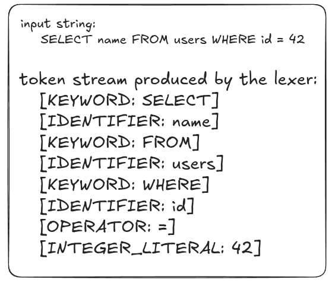
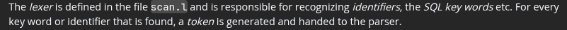
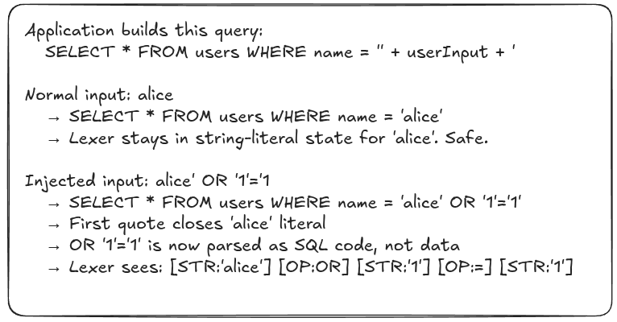
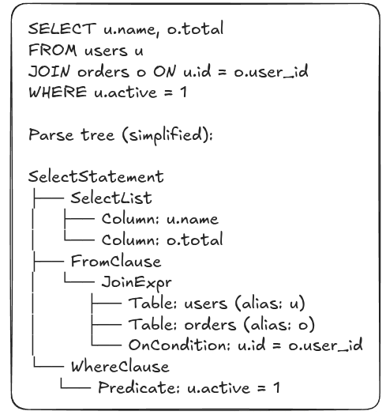
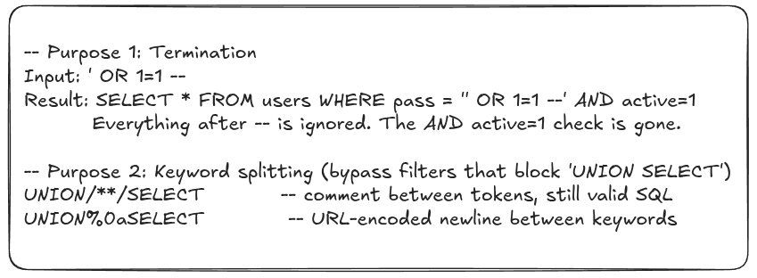
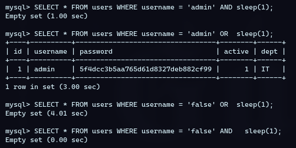
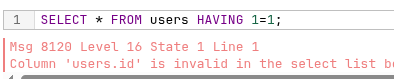
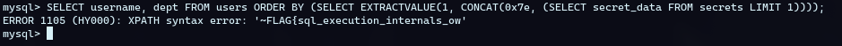

SQL Injection: The Real Execution Pipeline
Why you need this
Most SQL injection tutorials start at the exploit. Like they always start by the famous payload
' OR 1=1 # without knowing what’s actually happened there. So like that you find
yourself almost memorizing the payloads (if you test those bunch of payloads and no sqli found then
it’s not there).
That happens because you learned the surface without the substrate.
So .. ! This article fixes that. We are going to walk through HOW THE DATABASE ENGINE ACTUALLY PROCESSES A SQL QUERY from the moment your string arrives, to the moment rows come back. Every concept we cover will be tied directly to an attack surface. By the end, you will not just know WHAT to inject, you will know WHY IT WORKS AT THE EXECUTION LEVEL, which is the difference between a person who hacks and someone running scripts.
The lie you were taught about sql (or at least you think about sql)
When you first learned SQL, you were implicitly taught that queries execute in the order they are written;
For example when:
SELECT name, email FROM users WHERE active = 1 ORDER BY name ASC LIMIT 10;
| SELECT name, email | 1. pick these columns |
|---|---|
| FROM users | 2. from this table |
| WHERE active = 1 | 3. filter these rows |
| ORDER BY name ASC | 4. sort them |
| LIMIT 10; | 5. take the first 10 |
This mental model is wrong and it matters for SQL injection.
The written order is declarative syntax. It is how you describe what you want, but the database doesn’t execute queries in that order, it has its own internal pipeline.
So the 2 orders are fundamentally different.
Understanding this difference is not academic, it directly controls:
- WHERE your injection payload lands in the processing pipeline.
- WHAT DATA is visible to each clause and therefore what you can extract.
- WHY SOME INJECTIONS WORK in
WHEREbut not inSELECT, or work inORDER BYbut nowhere else. - WHY some clauses (like HAVING) can be weaponized to leak database schema through aggregate errors, while injecting the exact same payload into a WHERE clause will just crash.
The real execution pipeline
Here is the actual logical processing order of a sql select statement. (This is not specific to MySQL or PostgreSQL, it’s part of the ANSI SQL standard and every major database follows it with some minor variations in optimization).
| step 1 | FROM / JOIN (allocate buffer in memory and load data into it) |
|---|---|
| step 2 | WHERE (drops all the rows are not true, filter individual rows) |
| step 3 | GROUP BY (collapse rows into groups) |
| step 4 | HAVING (filter groups) |
| step 5 | SELECT (compute output columns + aliases) |
| step 6 | DISTINCT (remove duplicate rows) |
| step 7 | ORDER BY (sort the output) |
| step 8 | LIMIT / OFFSET (page the output) |
The parser: how the database reads your input
Before any of the execution stages above run, the database has to parse the raw SQL string you sent. Understanding the parser is critical because SQLI IS FUNDAMENTALLY A PARSING ATTACK. You are not breaking into the database through a vulnerability in its encryption or whatever else. You're just making the parser misidentify the boundary between data and code.
Lexical analysis (Tokenization)
The first thing the parser does is break the raw SQL string into a flat list of tokens. A token is the smallest meaningful unit of SQL. The lexer reads character by character and classifies everything it sees:

If you want to see that in the source code you can see those sources:
- https://www.postgresql.org/docs/current/parser-stage.html
- https://www.youtube.com/watch?v=m8PtOY3aWL0
- https://github.com/postgres/postgres/blob/master/src/backend/parser/scan.l

The lexer uses a state machine. At any point, it is in one of several states: reading an identifier, reading a string literal, reading a number, reading a comment, etc. Each state has rules about what characters are valid and what state transitions are allowed.
The single quote ' is the most exploited character in SQLI because it’s a state
transition character for string literals. When the lexer sees ', it transitions
from "reading code" to "reading string literal". The next '
transition will make the state back. Everything between the quotes is treated as data not code.
By passing an unexpected quote, you force the lexer to prematurely exit the 'reading string literal' state and drop back into the 'reading code' state. From that exact character onward, the parser stops treating your input as harmless text and begins tokenizing your payload as executable database commands:

Syntax analysis (the parser Tree)
After the tokenization, the parser takes the tokens and builds a parse tree (also called an Abstract syntax tree AST). The AST represents the grammatical structure of the query.

The parse tree is what the engine actually works with, not the original string. This is why SQL
keywords are case-insensitive: the lexer normalizes them before they reach the tree.
SELECT, select, and SeLect all produce the same
[KEYWORD:SELECT] token.
Comments as weapons
SQL supports 2 comment syntaxes. Both cause the lexer to discard everything until the end of the comment, which is one of the most powerful injection tools available beside the normalization phase that happened in the lexer too. Let’s leave the normalization rabbit hole to other articles 🙂.
| Syntax | Description |
|---|---|
-- |
single line comment (standard SQL, MySQL, PostgreSQL, MSSQL) |
# |
single line comment (MySQL only) |
/* */ |
multi-line comment (all databases) |
/*! */ |
MySQL-specific inline comment — executes in MySQL, ignored elsewhere |
For injection, comments serve 2 primary purposes:
- Termination: cut off the remainder of the original query after your payload
- Bypass: split keywords to evade pattern-matching filters

The query optimizer: What happens before execution
The optimizer performs several types of rewrites, to make it better (it’s called the planner too).
And the important ones for hackers are:
- Short-circuit evaluation: is a database optimization trick where the engine
stops reading a query the moment it knows the final True/False outcome. For hackers doing
Time-Based SQLi, this can hide vulnerabilities. If you inject
AND sleep(1)on a condition that evaluates toFalse(like a wrong username), the database skips your sleep entirely, giving a0.00sresponse and making the site look secure. To bypass this, always test with bothANDandOR. IfANDgives you no delay, flip it toORto force the engine to execute the sleep. Conversely, if yourORpayload causes a massive timeout because the database is executing the sleep on every single row in the table, simply appendLIMIT 1to kill the table scan and get a clean, reliable delay.

You can search for those (just for fun):
- Predicate pushdown: WHERE conditions are pushed as close to the data source as possible. So a filter on a subquery can get moved inside another subquery, changing where your injection takes effect.
- Constant folding: Expressions with only constants are pre-evaluated. So
1=1becomes TRUE before the execution.
How database sees your injected input
This is the core of that vulnerability, as we said SQLI is a parsing attack but the more important detail is how this database engine sees our input.
String concatenation: the root cause
SQL injection is only possible when user input is combined with SQL code through string concatenation before the combined result is sent to the database parser, the parser receives a single string and has no way to know which part were 'code' and which part were 'data'.
user_input = request.form['username']
# THE FATAL FLAW: String Concatenation
query = f"SELECT id, dept FROM users WHERE username = '{user_input}'"
cursor.execute(query)
# if the input were "zoublik" then we have a query like :
# SELECT id, dept FROM users WHERE username = 'zoublik'
# but if the input were "admin' OR 1=1 -- -" the query will be :
# SELECT id, dept FROM users WHERE username = 'admin' OR 1=1 -- -'Parameterized Queries: Why They Actually Work
Parameterized queries fix the injection not by escaping your input but by sending the code section and the data through separate channels, the SQL code is parsed first, then the parameter values are bound after parsing in simple terms (YOUR INJECTED INPUT WILL NEVER BE PARSED).
user_input = request.form['username']
# the code channel :
query = "SELECT id, dept FROM users WHERE username = ?"
# input passed as a parameter
cursor.execute(query, (user_input,))
# this one will make the attacker injection looks like that :
# SELECT id, dept FROM users WHERE username = "admin' OR 1=1 -- -"
# [admin' OR 1=1 -- -] this one will be as one block ( a simple string ). that's itHowever, parameterization is not a universal fix. It only protects data values, not
structural identifiers. If an application requires a dynamic query where the planner must build a
completely different execution plan based on the input, parameters physically cannot be used. For
example, you cannot parameterize a table name (SELECT * FROM ?) or a sorting column
(ORDER BY ? DESC). Because the engine must know the exact table and columns to check
permissions and indexes before execution, developers are forced to fall back to vulnerable
string concatenation for features like dynamic column sorting (?sort_by=price) or
dynamic table routing.
Second order injection: injection that sleeps (for a while HIHI)
Second order injection (also called stored injection) happens when input is safely stored, but later retrieved and used unsafely. The injection doesn’t fire on the first request, it fires on a second request that reads the stored data. For example you can name yourself in a platform some random sql query and then try to update your password so when the backend tries to:
# username is "admin' OR 1=1--" stored safely BUT :
UPDATE users SET pass='new123' WHERE username='admin' OR 1=1 --'Injection Points Mapped to Execution Stages
When you find an injection point, the clause you land in dictates exactly what tools you can use. You cannot escape the clause context or its order (you know! stacked queries are not allowed). You have to play by its pipeline rules. Here is how stages now will make sense.
FROM clause injection point:
This stage allocates the initial data buffer, it controls the literal source of the data before any
filtering happens. Since it’s step 1 you can completely swap the working data set, pointing the
query to information_schema to map the database or switch from low privilege table to a
high privilege one. Or UNION based injection as well 🙂.
For example:
# the query is : SELECT * FROM '[input]'
SELECT * FROM information_schema.tablesWHERE clause injection point:
This stage evaluates the working set row by row and drops the false ones, and because it runs at
stage 2 (before the output is generated in stage 5 (SELECT)) you can easily satisfy the
filter and append a UNION SELECT so the engine finishes the WHERE filter, moves down
the pipeline, and cleanly stacks your union data into the final output.
# SELECT dept FROM users WHERE username = '[INJECT]'
SELECT dept FROM users WHERE username = 'admin' UNION SELECT password FROM users --'HAVING clause injection point:
This stage filters data after it has been grouped together (GROUP BY).
Therefore, all the attacker needs to do is inject a valid boolean expression (using logic,
aggregates, functions, or subqueries) to manipulate which groups are returned or knowing some data
out of that groups scope using some conditional sleeps or even aggregate errors that leak table and
column names [THIS LAST ONE WE WERE TALKING ABOUT MSSQL].

ORDER BY clause injection point:
This stage sorts the final output data after it has already been selected (SELECT).
Therefore, all the attacker needs to do is inject a valid sorting expression (using
CASE WHEN logic, subqueries, or functions). You can use this to manipulate how the rows
are ordered on the screen to extract true/false answers, pull out-of-scope data using conditional
sleeps per row, or force function errors that leak hidden data directly into the error log [like
using EXTRACTVALUE() in MySQL].

Honestly, maybe I just overthought this entire thing and I'm just talking BS right now to sound smart. But at the end of the day, if you know how the engine breathes, you know how to choke it.
See you in the next one.